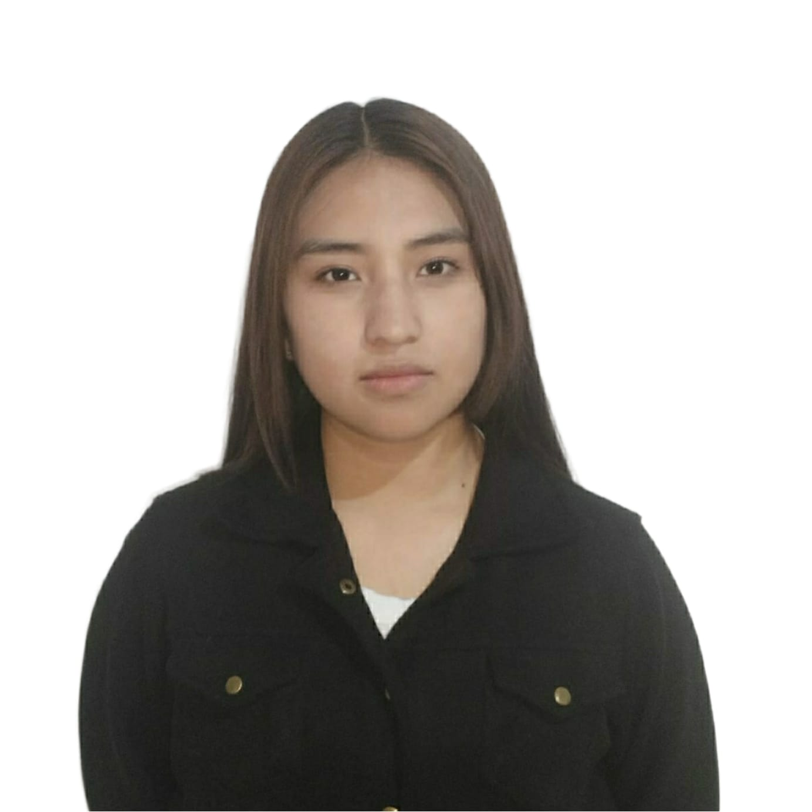

Edad: 18 años
Sexo: Femenino
Correo: krishnalazcanomolina@gmail.com
Celular: 69668115
Referencia: 77863687
Español
Nivel inicial: Kinder Mariscal Andrés de Santa Cruz (Potosí)
Nivel primario: Unidad Educativa Litoral (Potosi)
Nivel secundario:
No cuento con experiencia profesional.
Decidí estudiar Ingeniería de Sistemas porque la tecnología actualmente es una parte muy importante de nuestra vida diaria. Muchas de las cosas que usamos todos los días funcionan gracias a sistemas tecnológicos, como las aplicaciones del celular, las redes sociales, las plataformas educativas, los sistemas de los bancos y muchas herramientas que utilizan las empresas.
Por eso me llamó la atención entender cómo funcionan todos esos sistemas y cómo se crean. No solo me interesa usar la tecnología, sino también aprender cómo se diseñan los programas, cómo se desarrollan las aplicaciones y cómo se pueden mejorar para que funcionen de una mejor manera.
La Ingeniería de Sistemas permite aprender sobre programación, desarrollo de software, manejo de información y solución de problemas utilizando la tecnología. Me parece interesante poder adquirir esos conocimientos y aplicarlos en diferentes áreas.
Además, considero que es una carrera con muchas oportunidades laborales, ya que la tecnología sigue avanzando constantemente y cada vez más empresas necesitan sistemas para funcionar. Algo que también me parece interesante es que en esta profesión muchas veces se puede trabajar de manera remota, es decir, desde casa, utilizando una computadora y conexión a internet.
Me motiva la idea de poder crear soluciones tecnológicas que ayuden a las personas o que faciliten el trabajo en diferentes organizaciones. Me gustaría en el futuro poder desarrollar programas o sistemas que aporten algo útil a la sociedad.
Estudiar esta carrera me permitirá seguir aprendiendo constantemente, ya que la tecnología siempre está cambiando y evolucionando. Por eso considero que Ingeniería de Sistemas es una buena opción para mi futuro profesional y personal.
También pienso que esta carrera me permitirá desarrollar habilidades importantes como el pensamiento lógico, la capacidad de analizar problemas y buscar soluciones eficientes. Estas habilidades no solo son útiles en el ámbito profesional, sino también en la vida diaria.
Otra razón por la que me interesa esta carrera es porque la tecnología está presente en casi todos los sectores, como la educación, la salud, el comercio, la industria y la comunicación. Esto significa que un ingeniero de sistemas puede trabajar en diferentes áreas y participar en proyectos muy variados.
Asimismo, me parece interesante aprender sobre bases de datos, redes, seguridad informática y desarrollo de sistemas, ya que todos estos elementos forman parte del funcionamiento de la tecnología actual. Con estos conocimientos se pueden crear herramientas que ayuden a mejorar la organización y el manejo de la información.
También considero que estudiar Ingeniería de Sistemas me dará la oportunidad de participar en proyectos innovadores y trabajar en equipo con otras personas para desarrollar nuevas soluciones tecnológicas. Esto puede contribuir al crecimiento de las empresas y también al desarrollo de la sociedad.
Por otra parte, me gustaría aprender a crear programas que faciliten algunas tareas diarias, ya sea en empresas, instituciones o incluso para el uso personal de las personas. De esta manera, la tecnología puede convertirse en una herramienta que mejore la eficiencia y la productividad.
Finalmente, estudiar Ingeniería de Sistemas representa para mí una oportunidad de crecimiento personal y profesional. Me permitirá adquirir nuevos conocimientos, enfrentar retos y adaptarme a los cambios tecnológicos que se presentan constantemente en el mundo actual. Por todas estas razones considero que esta carrera es una buena elección para mi futuro.
Aún no tengo definida en qué área especifica me gustaria trabajar, considero que a medida que avance en la carrera y adquiera más conocimientos podré descubrir el área en el que mejor desarrolle mis habilidades.
📧 krishnalazcanomolina@gmail.com
📱 69668115